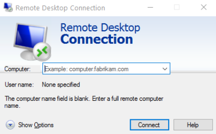
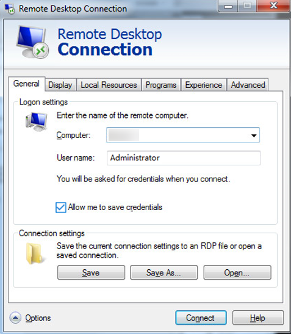
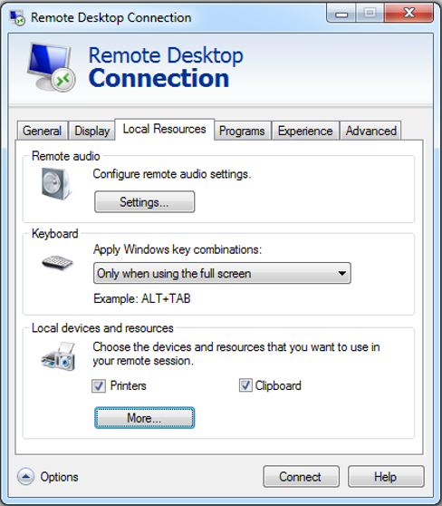
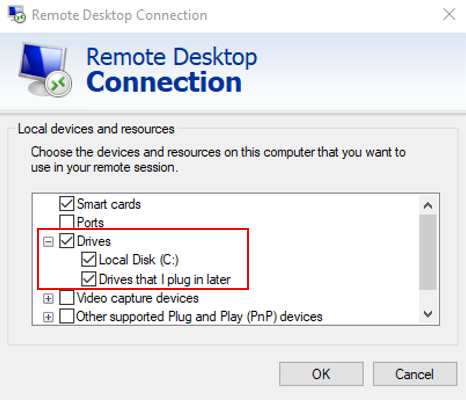
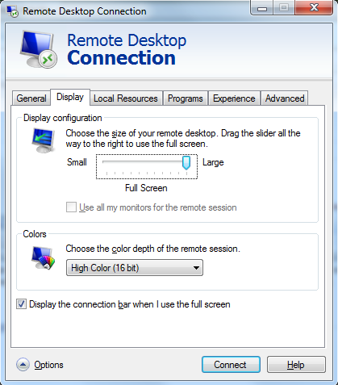
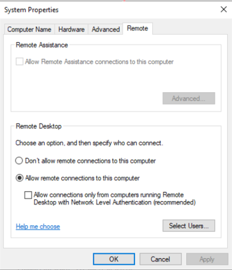

Scenarios
This section describes how to use the remote login tool MSTSC to log in to a Windows ECS from a local computer.
Prerequisites
- The target ECS is running.
- You have obtained the password for logging in to the Windows ECS. For details, see Obtaining the Password for Logging In to a Windows ECS.
- You have bound an EIP to the ECS. For details, see Binding an EIP.
- Access to port 3389 is allowed in the inbound direction of the security group to which the ECS belongs. For details, see Configuring Security Group Rules.
- The network connection between the login tool and the target ECS is normal. For example, the default port 3389 is not blocked by the firewall.
- RDP has been enabled on the target ECS. By default, RDP has been enabled on the ECSs created using a public image. For instructions about how to enable RDP, see Enabling RDP.
Logging In to a Windows ECS Using MSTSC
If your local server runs Windows, you can use the remote desktop connection tool MSTSC delivered with the Windows OS to log in to a Windows ECS.
- Click the start menu on the local server.
- In the Search programs and files text box, enter mstsc.
- In the Remote Desktop Connection dialog box, click Show Options.Figure 1 Show Options
 - Enter the EIP and username (Administrator by default) of the target ECS.

If you do not want to enter the username and password in follow-up logins, select Allow me to save credentials.
Figure 2 Remote Desktop Connection
 - (Optional) To use local server resources in a remote session, configure parameters on the Local Resources tab.To copy data from the local server to your ECS, select Clipboard.Figure 3 Clipboard
To copy files from the local server to your ECS, click More and select your desired disks.Figure 4 Drives
 - (Optional) Click the Display tab and then adjust the size of the remote desktop.Figure 5 Adjusting the size of the desktop
 - Click OK and enter the login password as prompted to log in to the ECS.
To ensure system security, change the login password after you log in to the ECS for the first time.
- (Optional) After logging in to the ECS using RDP, handle the issue that local files larger than 2 GB cannot be copied to a remote Windows ECS.
For details, see troubleshooting cases.
Enabling RDP
When you log in to an ECS for the first time, log in to it using VNC, enable RDP, and access the ECS using MSTSC.
By default, RDP has been enabled on the ECSs created using a public image.
- Log in to the Windows ECS using VNC.
For details, see Login Using VNC.
- Click Start in the task bar and choose Control Panel > System and Security > System > Remote settings.
The System Properties dialog box is displayed.
Figure 6 System Properties
 - Click the Remote tab and select Allow remote connections to this computer.
- Click OK.